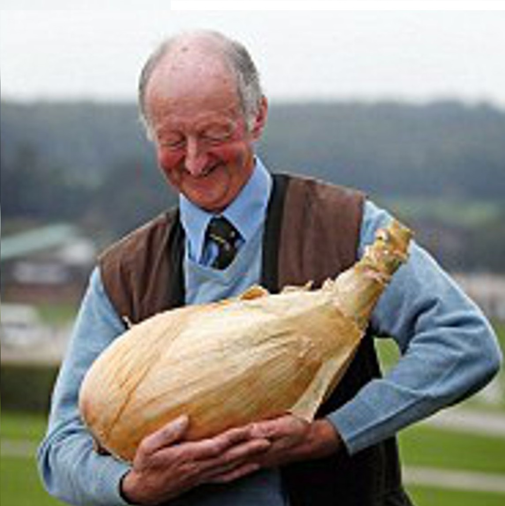
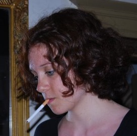

"Je n'y croyais plus mais en échange d'un poulet, Ariane a réussi à revivifier notre vie sexuelle, elle a changé notre vie"
Gérard Pugeot et son oignon
"Notre ancien poste de radio avait rendu l'âme, grâce à Ariane nous pouvons enfin écouter le dernier feat de M Pokora"
Odile et René, gilets jaunes.
"M poko qui ? Je comprends rien à ce site internet, je suis pas sur ventre privée ?"
Catherine LOUIS, aucun lien fils unique.
"J'ai juste mangé beaucoup de fondue mais j'ai été convaincue par Ariane que j'avais le droit à l'écoute et l'accompagnement que je méritais."
Sue Xen, leader du groupe AFVF (Amateurs de Fondue Vegan Française).

"Je vais tellement fumer vos enfants qu'ils seront plus fumés qu'un poisson fumé !"
Anonyme
 Federal Bureau of Doula
Federal Bureau of Doula